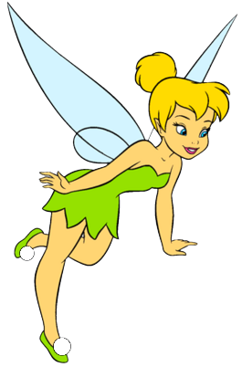
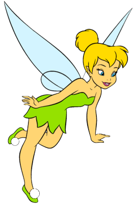

Welcome to Disney World... explore >>
Which is your favorite Disney character?


 


Top 6 Popular Characters


Among all the Disney characters, who is favored by most people? The top 6 popular characters presented are from the voting result here. The results may be different from one ranking to another, but hey, Mickey Mouse is always the top one! Click the character to see people's comments.
Top 30 Highly Reviewed Disney Movies